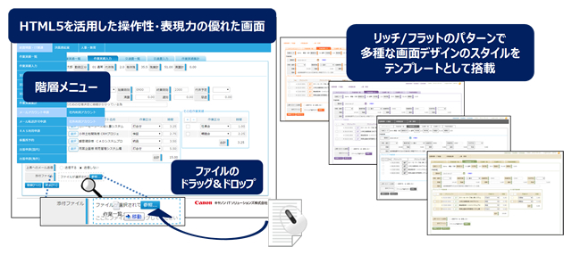
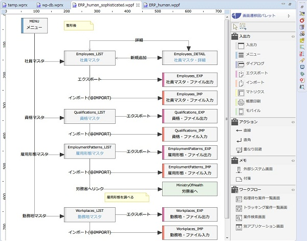
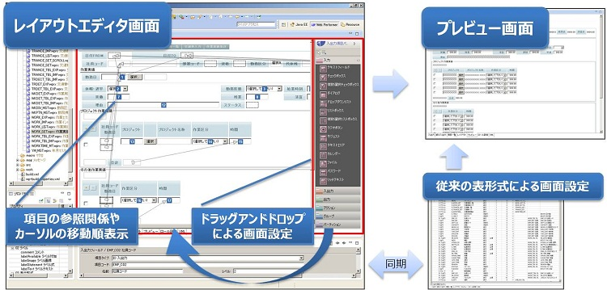

TEL. 022-200-9006
〒980-0014 宮城県仙台市青葉区本町2-3-10 仙台本町ビル
着実にバージョンアップを重ねています。
■ HTML5とCSS3を活用し、Webアプリケーションのデザイン性、操作性のさらなる向上を実現
「Web Performer V1.5.0」では、Web画面開発に用いられるHTML5とCSS3の技術を新たに採用しました。これにより、ドラッグ・アンド・ドロップ操作による添付ファイルの指定や、システムメニューの階層表示など、操作性や表現力に優れた画面開発が可能となり、システムを利用するエンドユーザーの、さらなる業務操作性の向上が望めます。また、自動生成できるWeb画面デザインのスタイルも刷新し、新たなスタイル(フォント・文字色・背景色)を20パターン追加しました。これらのスタイルをもとに、開発者は独自のWeb画面デザインをGUIエディタで作成することが可能となり、導入企業オリジナルのWeb画面デザインが簡単に実現できるようになります。
■ アシスト社のBRMS(*) 「Progress Corticon(プログレス コーティコン)」との連携強化
「Web Performer V1.5.0」のWebサービス連携機能を強化し、「Progress Corticon」で設定した語彙やビジネスルールをJavaのコーディングなしで取り込み、呼び出しが可能になりました。
■ 設計機能の強化として「画面遷移図作成」機能を搭載
最新版の「Web Performer V1.4.2」では、設計機能が強化され、これまでの設計書出力機能（リポジトリ定義内容のExcel形式出力）に加えて、GUI操作で画面遷移図の作成が可能となりました。これにより、瞬時にシステム全体の画面遷移状況が把握できるため、システム開発とメンテナンスにおける生産性が向上します。

■ オープンソース・ソフトウェア（以下OSS）への対応を拡充
Webアプリケーションの対応環境に、新たにPostgreSQLとCentOSを追加しました。昨今、クラウドや仮想環境へのシステム移行時など、エンタープライズシステムでのOSS利用が高まっています。自動生成したWebアプリケーションの利用環境を拡張することで、新たな市場拡大を図ります。
■ 大規模システムに不可欠なバッチ処理の自動生成が可能
最新版の「Web Performer V1.4.1」では、これまでのWebアプリケーション生成に加えて、バッチ処理用のJavaプログラムも100%自動生成可能になり、「Web Performer」の適用範囲がさらに拡大しました。バッチ処理用の定義は、オンライン処理用の定義を共通利用できるため、初期開発や運用・メンテナンスの工数を大幅に削減することが可能です。また、大量データを扱うための、パフォーマンス向上のチューニングやリカバリーの機能も搭載しており、業務毎に最適なバッチ処理を短期間で構築することが可能です。
■ 開発画面にレイアウトエディタを機能追加し、直感的操作が可能
「Web Performer」でシステム開発する際、画面設計は画面項目とデータの関連付けで行います。最新版の「Web Performer V1.4.0」では、従来の表形式で設定するエディタに加え、レイアウトエディタによるビジュアルな画面設計が可能になり、画面項目やGUIコントロールの設計がドラッグアンドドロップのマウス操作でできるようになりました。またレイアウトエディタ上で、画面項目間の参照関係やカーソルの移動順など、項目に設定されている属性情報も確認することができます。さらに、プレビュー機能ではユーザーが独自に設定したCSSやHTMLも瞬時に反映され、設計した画面をすぐに確認できるため、プログラムの再生成やデプロイといった時間のかかる作業は不要となり開発工程を大幅に効率化することができます。また、開発部門とエンドユーザー部門の迅速で正確なコミュニケーションも可能になり、手戻りの少ない高品質なシステム開発を実現します。

「Web Performer V1.3.1」は多言語に対応したWebアプリケーションの100％自動生成が可能になりました。生成されたWebアプリケーションは、任意に表示言語を切り替えて利用することができます。このため、各言語毎にWebアプリケーションの生成やメンテナンスをする必要がなく、開発・運用面で効率化できます。また、初期設定では日本語、英語、中国語（簡体字）に対応していますが、Unicodeを採用しているため、翻訳した言語リソースファイルを登録することで、それ以外の言語にも対応できます。なお、各言語への表示切換えは、利用者毎にブラウザの設定でおこないます。海外拠点でもWebアプリケーションを利用する日本企業をターゲットにしており、グローバルでビジネス展開している企業のWebアプリケーション開発を支援します。
「Web Performer V1.3.0」では、従来のPCから利用するWebアプリケーションの自動生成に加え、iPhone やiPad、Androidスマートフォン、タブレット端末から利用するWebアプリケーションも100％自動生成できるようになりました。これにより、Web開発者は、画面定義の際、「モバイル画面」と設定するだけで、従来のPC用Webアプリケーションの定義と同じ方法でスマートデバイスに対応したWebアプリケーションの構築が可能になりました。「Web Performer V1.3.0」は、オープンソースであるj Query Mobile（※）のGUI部品を活用しており、スマートデバイスのブラウザに最適化された画面や、フリックやタップといったスマートデバイス特有の操作をもったWebアプリケーションを自動生成できるようになりました。また利用者は、業務システムの利用範囲が大幅に拡充され、新しいワークスタイルにも対応することができます。
「Web PerformerV1.2.2」では、マルチブラウザ環境下で利用するWebアプリケーションの100％自動生成が可能となりました。これにより、利用者はAjax技術やJavaScriptを活用した操作性の高いWebアプリケーションを従来のInternet Explorerに加え、FirefoxやGoogle Chrome、Safari（*）でも利用できるようになりました。またWeb開発者は、JavaScript等のブラウザ依存による仕様差異への対応に悩まされることなく、柔軟性の高いマルチブラウザ対応アプリケーションをコーディング無しに簡単かつ低コストに構築することができます。多様化するビジネスニーズ への俊敏な対応と、変化に強いIT基盤の構築が可能になります。
不明
"Web PerformerV1.2.0"では、開発現場からの要望の多い、統合基盤を利用してレガシーシステムを有効活用する SOA（サービス指向アーキテクチュア）開発での自動生成ツールの活用、グループウェア資産の Web 化、クライアントサーバー型資産のマイグレーションなどの分野にフォーカスした新機能を搭載しました。既存のIT資産を有効活用することで、開発コスト削減・開発期間の短縮、柔軟性の高いシステム構築によるメンテナンスコスト削減など、ビジネスニーズに対応した変化に強いIT基盤の構築が可能となります。
＜ SOA UI(ユーザ・インタフェイス) 構築 ＞
社内にある既存IT資産をSOA技術で基盤連携する際、複数のシステムのWebサービスを一画面で利用できる「SOA UI」を、Web Performerの自動生成技術を利用して開発可能になりました。簡単にすばやくユーザ・インタフェイスを構築でき、項目追加や画面レイアウトなどの変更も柔軟に対応できます。
＜ 生成アプリケーションへのリッチテキストエディタの実装 ＞
フォント指定や、文字の色・大きさや太文字などの装飾指定、中央揃え、画像表示やファイル添付などの簡易レイアウトを行うことができる「リッチテキストエディタ」を実装したWebアプリケーションを自動生成する機能が搭載されました。従来のIT資産をWeb化し再構築する際、使い慣れた画面を踏襲することが可能になります。
〒980-0014
宮城県仙台市青葉区本町2-3-10
仙台本町ビル
TEL 022-200-9006
FAX 022-721-3503
URL http://nanairo-inc.jp
採用サイト https://nanairo-inc.jp/graduate_recruitment
Mail
ishimori_yuzuru☆nanairo-inc.jp
担当 石森